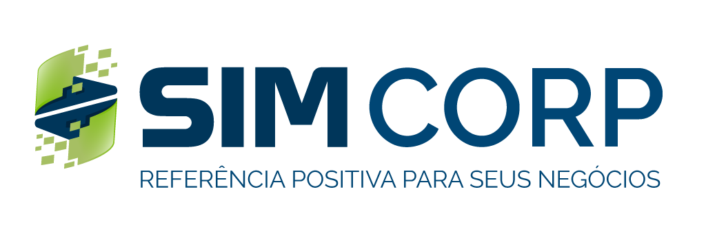

JIRA · simconsultas.atlassian.netAtividades sem épico pai — ordenadas por andamento. Considere vinculá-las a uma iniciativa para acompanhamento.
Conclusão estimada pela data da última movimentação (o projeto não registra data de resolução).
Atividades em Em Progresso ou Em Validação sem nenhum apontamento de tempo. "Dias parado" = dias desde a última movimentação no Jira.